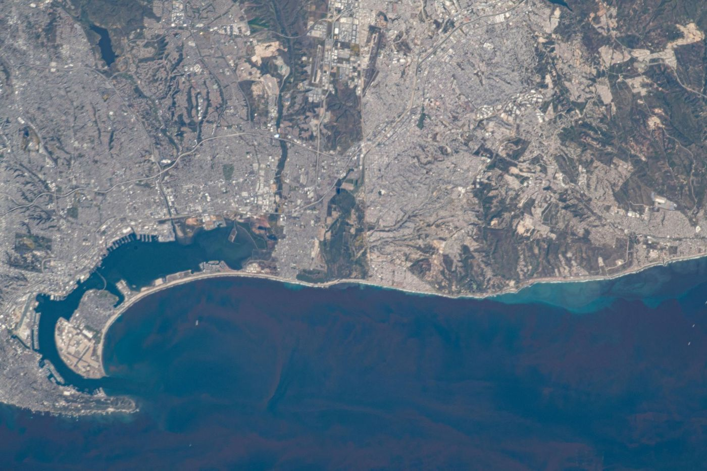
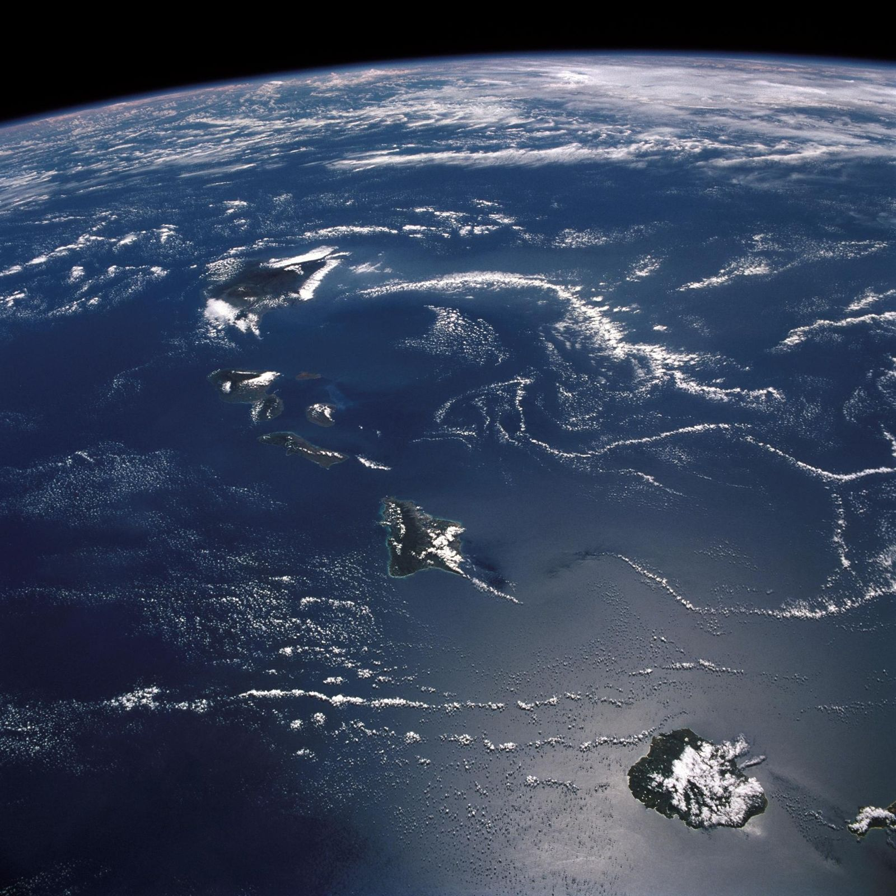
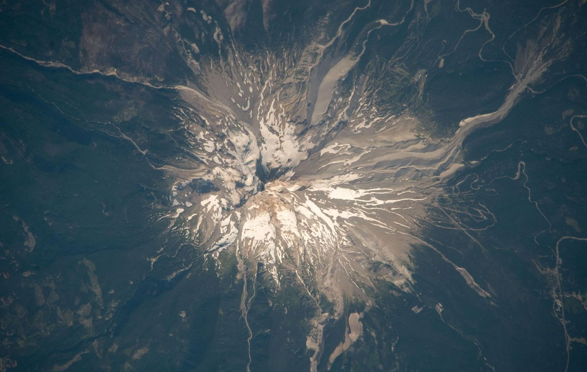

Earth system science · Biogeochemistry · Oregon State University
Cameron
Souza
Life on Earth runs on a few element cycles. I model how they work inside bounded systems, from islands to sealed habitats.
Half of Earth's photosynthesis floats.
Marine phytoplankton carry out roughly half of global net primary production. Where nutrients reach the sunlit surface, blooms grow large enough to see from orbit. Carbon, nitrogen and phosphorus set the pace.
An island runs on what crosses its coast.
Hawaiʻi sits in the nutrient-poor middle of the North Pacific. Groundwater, streams, upwelling and dust carry nutrients across the shoreline, and the reef community lives on that supply. This is my study system.
Reefs hold on to more of what arrives.
A ring of coral slows the water. Nutrients stay longer, and the community recycles a larger share of its own supply. The boundary is still open, but narrower.
Life keeps a ratio.
Marine plankton average about 106 carbon to 16 nitrogen to 1 phosphorus, the Redfield ratio. In a bounded system, the element that runs short first limits everything else. Measuring those ratios tells you where the boundary matters.
The same chemistry, sealed.
NASA has grown crops in closed chambers at Kennedy Space Center and now on the International Space Station. A crewed habitat is a bounded system with almost no exchange. The element cycles still have to balance.
Earth is the original bounded system.
Seen from the Moon, the planet is closed to matter and open to sunlight. Its element cycles have kept life running for billions of years. They are the reference design for every smaller system I study.
One model, fitted where data are rich, carried to where they are scarce.
Islands are data-rich. Satellites, stream gauges and ocean monitoring programs have watched Hawaiʻi for decades. Sealed systems are data-poor, and small errors in their element budgets compound fast.
My dissertation builds a hierarchical Bayesian state-space model for bounded biogeochemical systems. I test it on nutrient and carbon budgets across the Hawaiian Islands, then apply the fitted structure to bioregenerative life support.
XStocks of carbon, nitrogen and phosphorus inside the boundary.
P, RProduction and respiration by the living community.
ΦFlows across the boundary: groundwater, runoff, upwelling, dust. Large for an island, near zero for a sealed habitat.
- PHASE 1
Foundations
Define a bounded system, and when two systems share one model.
- PHASE 2
Inference
Fuse data sources and carry uncertainty through every estimate.
- PHASE 3
Hawaiʻi
Fit the model to satellite and public federal data across the islands.
- PHASE 4
Closed systems
Apply the result to closed-system design and check it against chamber studies.
Now
September 2026
- StartingPhD at Oregon State
Fall term begins 23 September, in the College of Earth, Ocean, and Atmospheric Sciences, with Dr. Carolyn Fonyo.
- WritingA methods paper
Bayesian mass-balance models tested on simulated natural and engineered systems.
- PresentingAGU26, San Francisco
7 to 11 December. First public run of the framework.
- TeachingMATH 301 at Unity
Statistical Modeling for Life and Environmental Sciences, online, in R.
Papers and talks
Preprints and code linked on release
- SubmittedBounded Biogeochemical Systems: A Hierarchical Bayesian Framework from the Hawaiian Archipelago to Bioregenerative Life SupportAGU26 Annual Meeting abstract
- In preparationHierarchical Bayesian Mass-Balance and Stoichiometric Identification for Bounded Biogeochemical Systems: A Computational Validation Across Natural and Engineered DomainsSouza, C.
- PlannedBoundary fluxes across the Hawaiian IslandsDissertation chapter
About me
- Coral Restoration Foundation
Marine scientist, Florida Keys
- Center for Marine Debris Research
Project coordinator and data analyst, Oʻahu
- Founded Terra Laboratories
San Diego
- PhD, Oregon State University
Environmental Sciences, Quantitative Analysis
I grew up on the water side of science. I studied marine biology and sustainable aquaculture at Unity College, worked reef restoration in the Keys, and cleaned up marine debris data on Oʻahu.
The fieldwork kept sending me back to the numbers, so I earned an M.A. in data science at Harvard. Now I build models, teach statistics online at Unity Environmental University, and run Terra Laboratories in San Diego.
When I'm not at a keyboard I'm usually on a boat, under one, or on a board.



Working on element cycles, islands, or closed systems?
souzacam@oregonstate.edu